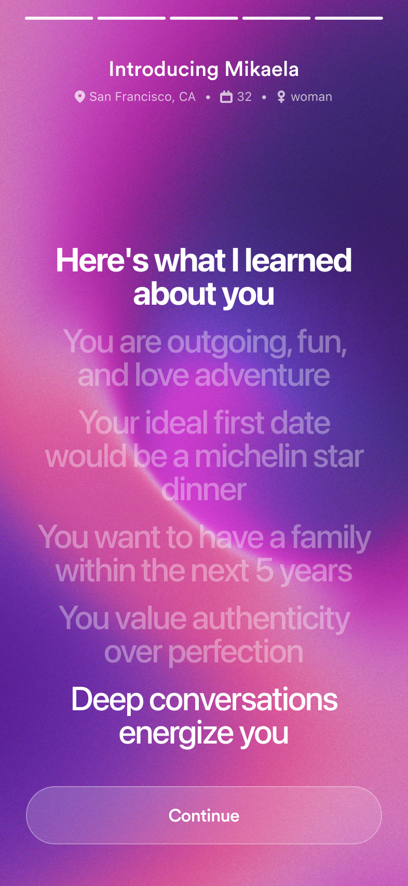

the problem
dating apps turned into a second job. you match, and then the real work starts: texting for days, staying interesting, finding a free night, picking a place. plenty of good matches end right there because someone got tired of typing.
the apps reward whoever is best at the chat, and that's a different skill from being good company. so winged flips it. you tell it who you are and who you want, on a call, in your own words. your double does the texting and the calling. you just show up.
the apps select for people who are good at the chat. i built winged for the people who are good in the room.
the system
one dark room, three kinds of light. every screen sits on pure black, and text steps down a fixed brightness ladder. when almost nothing is lit, whatever is lit is the message.
each gradient has one job. cool is the machine thinking. warm is people connecting. celebration is the one place they meet, and it only appears when a date is confirmed. the color tells you who is talking before you read a word.
"governing rule: cool = the system thinking, warm = humans connecting — never mixed arbitrarily per screen."
from winged.tokens.json, the single source of truth
#000 ground: one room, so light reads as meaning · 100/70/55/50/40 text steps: brightness is hierarchy, not a pile of grays · iris→sky = the machine · iris→magenta = people · sky→iris→magenta = date confirmed, the only place they meet · iris as the shared anchor: two registers, one brand · grain 0.10: light, not a fill · circular for titles · SF for reading · space mono caps for the agent's voice · -0.02em tracking: close-set, intimate · pure black, not dark grey: the calm base is what lets color mean something
one gradient, one job
cool · iris #9B71E8 → sky #70D4F5
intelligence: the agent working, scoring, the compatibility ring
warm · iris #9B71E8 → magenta #FF75CA
connection: matches, people, the introduction
celebration · sky → iris → magenta
a date is confirmed; animated, reserved for the one peak
brightness is the hierarchy
Alex100 · names, titles
A little about me70 · what you read
Exceptional fit55 · the agent's aside
Brooklyn50 · meta
Select intro40 · not yet available
the text ladder, live css from the tokens
title · circularA little introduction. All about you.
reading · SFPick how your double will introduce you, in your own voice.
agent · space monoActive · watching for the right fit
type trio, live css · circular is licensed, so it falls back to instrument sans here
i wanted the room calm and a little private. pure black, light only where it means something. if i can't say what a color is for, it doesn't get to be on the screen.
in motion
in the product the gradients move under a film grain, so the color feels like light coming from somewhere. the orb on the vouch call is the same idea. here are the three, each named by what it tells you.
violet + sky = the agent is working
cool · the agent is workingYour double is looking.
iris #9B71E8 → sky #70D4F5
warm · a personSomeone to meet.
iris #9B71E8 → magenta #FF75CA
celebration · it's happeningYour date is confirmed.
sky → iris → magenta, only when a date is confirmed
recreated in css from the tokens, grain at 0.10
the backgrounds, live
onboarding and the date card each run their own shader: a noise field, a drifting light and a flow field that bends it, with grain on top. onboarding is warm and bright because it's about you. the date card is a deep indigo night because by then it's about the two of you. these are the app's real shaders, running here.
the date card · live glsl
the agent experience
an agent that texts strangers for you asks for a lot of trust, so i designed it to earn trust one screen at a time. it shows you what it learned, lets you hear it first, publishes nothing without your yes, and keeps the off switch one tap away. everything below is the real web app with sample people. tap through it.


draft first. hear it first.onboarding, and setting up the profile.
there's no form and no bio. winged calls you, and then it reads back what it learned, on the warm gradient, because this part is about you. you can ask for one rewording with the facts kept the same, and only "accept and continue" publishes.
the double speaks for you. so the first thing it ever says is to you, and you get to say no.
someone else speaking for youvouching.
the people who know you help your person find you. you invite friends by name, they open a link and vouch by voice on the orb, no app needed, and you approve each vouch before it shows.
a vouch is words about you that you didn't write, so the first person to hear them is you.
the machine is quieter than the personseeing a match, and looking at their profile.
their words sit in the card at reading brightness, with their voice introduction on a warm pill. the agent's read sits outside the card, dimmer: the alignment first, then the percent in mono caps. the card's edge is warm because this is a person. the ring is cool because that part is the machine.
you meet who they are first and the score second.
it sets it up. you take it from there.the date: before, during, after.
before: the venue, what to bring up, a card to draw a question from. during: the date chat opens an hour before, and the two of you text each other directly for the first time. after: your double asks how it went. switch stages under the phone.
the agent finds the night and locks the place, then it hands the two of you to each other and steps out. on the date, it's just you two.
you can always take the wheelsettings.
pause your double, change your introduction, your location or your hours, and manage your vouches.
pause is one tap away, because people let an agent start when they know they can stop it.
voice
voice has been the cornerstone of winged since 2023. your double doesn't only text. it speaks, in your own voice.
the onboarding call does two things. it learns how you actually talk, not how you write when you're trying, and it clones your voice. your double records three takes of your introduction in that voice. you play them back, pick the one that sounds like you, and that's the introduction it carries to every match.
then the part i love most, the first-date simulation. when two doubles find a match worth your time, winged writes the first date you two might have and plays it in both of your cloned voices, right on the match card. you hear whether the conversation flows before you ever meet.
you hear your own voice before anyone else does, and you can change your pick any time.
a bio is written for strangers. a voice is how the people who like you already know you.
the agent system
the agent system i built. texts go to one of five agents, chosen by where you are in the journey. each one answers by calling a tool, links are built by code and never by the model, and every message the double writes is checked against its rules before it sends. the voice agents call you, and nothing speaks for you until you say yes. the python service, niina's, does the profiles and matching. pick a journey and scroll to walk it.
5 sms agents · 11 tools on the double · 5 voice agents · 9 mcp tools · 14 crons · 33 profile attributes · 0 redis, sqs or kafka
how a text actually arrives
i built the system under the screens too. every text your double sends travels a real path, and this is it, from the winged backend.
src/features/pre-onboarding/pre-onboarding.routes.js · .controller.js
// Twilio POSTs here. Check the signature before anything else.
router.post('/twilio-sms-webhook',
validateTwilioSignature,1
consumeWingedMaxPhoneProof,
inboundDispatch,
preOnboardingController.handleTwilioSmsWebhook);
const { From, To, Body, MessageSid } = req.body;
const phoneNumber = From.replace(/^whatsapp:/, '');2
if (!E164.test(phoneNumber)) { /* sender hidden: fail closed */ }
if (optOutAction === 'stop' || currentlyOptedOut) {3
await setOptOutStatus(phoneNumber, optOutAction === 'stop');
return res.status(200).send('<Response/>');
}
const routed = await schedulingSms.routeInboundSms(phoneNumber, Body);4
if (routed) return res.status(200).send('<Response/>');
await preOnboardingService.handleInboundSms(phoneNumber, Body, MessageSid, ...);
1HMAC check against the exact public URL 2the phone number is the user's identity 3STOP is mirrored, never sent to the model 4date relay first · excerpt, body shortened
stop never reaches the modelthe webhook is a gatekeeper first.
the agent never sees a message that failed the signature check or said stop. a sender the carrier hid gets no reply and no login link. your phone number is how winged knows you.
anyone can post to a public url, so the signature comes first. an opt-out is a rule, not a conversation, so it's answered before a model ever sees it.
shipped
winged came out of antler nordics and launched in san francisco and helsinki.
winged web is what people open from the links their double texts them. the voice pick, the draft review, the match card and the date chat on this page are that product.
what i bring from it
give the machine and the person different light. when the agent and the human never share a register, people always know who is talking. i design every agentic product that way now.
let people hear the agent before anyone else does. people hand an agent their name once they've heard it speak for them and said yes.
voice carries what text can't. a cloned voice and a simulated first date made a match feel like a person, not a profile. it's the most human thing i've designed.
every color has a reason, and anything that speaks for a person comes back to them first.